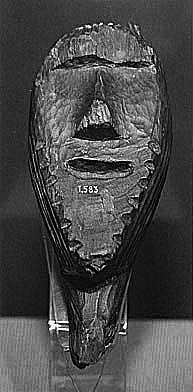

Самая древняя в мире деревянная скульптура
Большо́й Шиги́рский и́дол —
археологический памятник, древнейшая сохранившаяся деревянная скульптура в
мире (возраст оценивается в 11 тыс. лет), выполнена из лиственницы в эпоху
мезолита (IX тысячелетие до н. э.)
Шигирский идол обнаружен в ходе раскопок, начатых в середине XIX века в Шигирском
торфянике, на восточном склоне Среднего Урала северо-западнее Екатеринбурга, близ
деревни Калата (ныне город Кировград) — в это время там открыли месторождение
россыпного золота, и рабочие начали находить необычные предметы из рога, кости,
дерева, камня, глины.

Все предметы были в прекрасной сохранности. В XIX — начале
XX века Шигирский торфяник исследовали специалисты из Москвы и Петербурга, Казани
и Парижа. Они доподлинно установили, что это — «следы доисторического селища».
Большая часть этих предметов составила знаменитую Шигирскую кладовую Уральского
общества любителей естествознания(УОЛЕ, ныне — Свердловский краеведческий музей).
Сам идол был найден 24 января 1890 года на Втором Курьинском прииске Шигирского
торфяника на глубине четырёх метров и по распоряжению владельца территории графа
А. А. Стенбок-Фермора также был передан УОЛЕ. Поскольку дерево сохранилось плохо,
его извлекали из торфа по частям. Первым воспроизвёл примерный облик идола
тогдашний хранитель археологической коллекции музея УОЛЕ Д. И. Лобанов, получив
фигуру высотой 2,8 метра с руками и скрещёнными ногами, при этом некоторые
части фигуры между собой не были связаны, а ряд фрагментов не использовались
вовсе. Но в 1914 году археолог В. Я. Толмачёв предложил свой вариант
реконструкции. В варианте Толмачёва идол «вырос» до 5,3 метра.
Идол изготовлен из цельного расколотого бревна лиственницы сибирской возрастом не
менее 157 лет. Бревно перевёрнуто вниз вершиной. Это предохраняло дерево от
гниения. Сохранившаяся часть — верхняя половина тулова с головой и нижний
фрагмент, затёсанный на конус с выемкой в основании, из-за которой образуются
выступы, возможно, изображающие ноги идола. Тулово имеет форму доски,
прямоугольной в сечении, верхняя часть (голова) и нижняя, заточенная на конус,
объёмные. Считается, что в отличие от подобных фигур, Большой Шигирский идол не
вкапывался нижней частью в землю, а просто стоял, прислонённый или прибитый к
чему-либо. Обработка древесины велась по свежесрубленному стволу каменными
орудиями.
В 1887 году Шигирские древности были в центре внимания Сибирско-Уральской научно- промышленной выставки. Некоторые из них попали в Эрмитаж, музей при кабинете географии и этнографии Казанского университета, Государственный исторический музей (Москва), Национальный музей в Хельсинки, Парижский музей естествознания. Основная же часть находок осталась в Екатеринбурге.